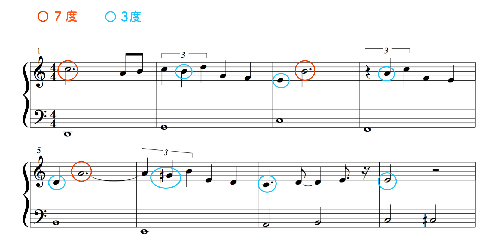

到目前为止，我们已经用多篇篇幅连续解析了“（外壳音）”体系，而本节将迎来这个序列的压轴环节：7th Shell（七度壳）。
 1. 7th Shell 的特质
1. 7th Shell 的特质
与 1、3、5 度音不同，7th 是能够制造出独特“色彩摩擦与复杂浊度（浊感）”的特殊存在。在营造成熟大人气息或流露感伤凄美的情绪时，它是绝佳的利器。虽然它可以说与 3rd 并驾齐驱、活跃非凡，但因为它带有鲜明的音响张力与不协和摩擦，比起通用的 3rd 来说，能让它完美发光的场合相对更为精挑细选一些。
在 V 和弦上的注意事项
核音（Kernel，调性音级）的影响始终如影随形。在 IV 或 IIm 和弦上，作为 7th Shell 出现的音都是调内的无倾向音（稳定音），因此非常顺手好用；然而在 V 和弦上，7th Shell 对应的却是调内具有强烈倾向性的“Fa”音，这种尖锐的不稳定性对使用时机提出了相当苛刻的要求。

在 V 和弦上出现的 Fa 音会产生极具冲击力的听觉动荡，因此使用时必须胸有成竹、懂得如何驾驭。虽然这把“双刃剑”般的 7th Shell 需要谨慎把控，但尤其是在 I 和 IV 和弦上叠置 7th 时，那种清冷脱俗、无可替代的华美与精致感令人沉醉。
2. 7th Shell 的实际范例
接下来，我们继续通过实际音乐作品中的应用来感受其魅力。
Mr.Children – HANABI
请注意 1:39 开始的副歌。和弦采用了深得亚洲乐迷喜爱的经典王道抒情走向，旋律更是一开篇就连续 5 次击打 7th 音，可谓集 J-Pop 精华之大成的神作。Mr.Children 的樱井和寿先生据说在创作上其实非常有理论派的深思熟虑，与他私交甚密的音乐人 Suga Shikao（スガシカオ）在其著作中提到，樱井曾对他说过：“以怎样的音程距离去悦耳地呈现相对于根音的几度音，这种审美品味决定了旋律的走向与气质”[1]。
初恋之岚 –《献给初恋》（初恋に捧ぐ）
在副歌后半段唱到“梦から”（从梦中）的地方，在 IV → V 进行的两个和弦上，旋律均精确撷取了 7th Shell。在“V + 7th Shell”的瞬间，强烈的 Fa 音撕扯而出，但这里的动荡不稳被发挥得淋漓尽致，升华为极其扣人心弦、直击灵魂的呼喊。流行音乐的创作归根结底在于音乐构思与歌词主题的高度共振。整首曲子广泛交织着 3rd 与 7th，编曲虽质朴原始，旋律色彩却万分丰饶。
Piazzolla – Oblivion（皮亚佐拉《遗忘》）
这是 20 世纪阿根廷探戈音乐宗师阿斯托尔·皮亚佐拉（Ástor Piazzolla）的传世名作。强烈推荐从头细细品味，但请特别关注 1:36~ 情绪推进高潮的部分。一段荡气回肠、足以撼动灵魂深处的浓烈旋律跃然纸上。人们常会感叹“这美得无需任何道理！”，然而在这令人屏息的美感背后，其实蕴藏着极其精妙的乐理法则。

Ástor Piazzolla《Oblivion》中段旋律（移调至 A 小调）正如上图所示，旋律长音延留的地方，无一例外全部整齐优美地落在了 7 度上。加之每个小节的起始强拍，几乎全都统一锚定在 3 度。外壳音配置极其规整考究，同时旋律线条又充满澎湃的炽热激情，丝毫察觉不到任何生搬硬套理论的斧凿痕迹，真可谓浑然天成、天衣无缝的化境。
正如我们在 3rd Shell 中以《再见，可爱的悲伤啊》为例所见，外壳音具有高度统一性的旋律线条极易被听众的耳朵捕获、理解与牢记，进而在听众心中留下久久难以磨灭的印记。
这首作品自始至终都在精妙绝伦的声部流动中展开。当我们用乐谱将其“解密破译”后，可能会萌生出“原来只要用 3rd 和 7th 就能写出这样的旋律啊”的错觉，但实则不然。唯有与我们此前所学的“上行与下行”、“跳进与级进”、“与”、“终止与越级”，以及横向节奏等诸般要素天衣无缝地交融在一起，才能诞生出这样令人震撼的旋律，堪称知识、经验与艺术敏锐度凝聚而成的结晶。
3. 如何关注与运用外壳音（Shell）
至此，我们已经完整梳理了 Root、3rd、5th、7th 各自具有的声音特质与用法！“外壳音（Shell）”这一维度，是旋律创作中具有决定性意义的核心支柱。单单回顾前面列举的这些经典谱例，想必你已经深切领会到了精妙的 Shell 配置是如何让旋律绽放出迷人魅力的。这其实正是在世俗观念中往往被笼统归结为‘乐感与天分’背后的真正真身之一。
当然，这绝不意味着作曲与审美毫无干系、仅凭乐理公式就能堆砌出绝妙佳作。Shell 归根结底是一套关于“如何将内心想要抒发的情感精准转化为声音”的表现力理论，它没有非黑即白的标准答案，必然需要直觉的参与。正因如此，通过理论清晰把握其内核，并通过对经典作品的分析不断深化对外壳音的领悟，才能够扎扎实实地提升个人的艺术感知力，将原以为全凭天赋决定的能力通过系统训练予以弥补。
如果在作曲时一边构思旋律一边兼顾 Shell 让你觉得手忙脚乱，不妨先从伴奏编曲入手练习：想要情绪丰富饱满时，将 3rd 和 7th 置于上方声部；想要简朴直接有力时，则以 Root 和 5th 为核心，在能用得上的地方有意识地去构思与聆听。 当这种度数听感与和声直觉深深融入你的本能后，必然会为你的旋律创作审美带来蜕变性的升华。熟练之后，你只需凭借敏锐的听觉直觉，就能瞬间判断出什么样的度数最能精确传达你想要的乐思风貌。
总结
- 7th Shell 会为和声赋予微弱的摩擦与浊度，这在绝大多数情况下会转化为“成熟稳重”与“惆怅凄美”的听觉色彩。
- 特别是在 V 和弦上使用 7th Shell 时，声响会变得极度不稳，因此必须挑准适宜的时机。
- 能够根据所欲传达的情感选择最恰当的外壳音，同时保持核音（Kernel）与动机走向的自然流畅与动人，是衡量优秀旋律的重要标尺。